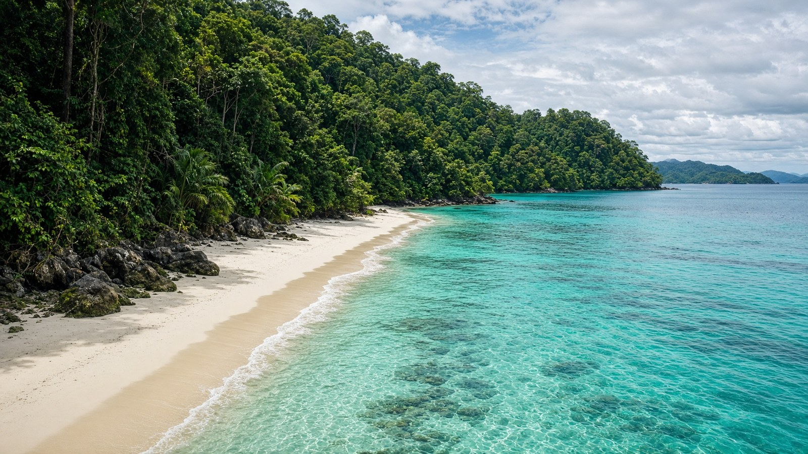

أوقيانوسيا
جزر سليمان
Solomon Is.
أرخبيل في الهادئ.
- العاصمة
- هونيارا
- نظام الحكم
- ملكية دستورية
- التأسيس / الاستقلال
- 7 يوليو 1978
- النوع
- ملكية
منذ التأسيس
استقلت في 7 يوليو 1978. عاصمتها هونيارا.
معالم
- معلمهونيارا
العاصمة.
- طبيعةغرب البلاد
غوص.
- طبيعةغوادالكانال
جزيرة.